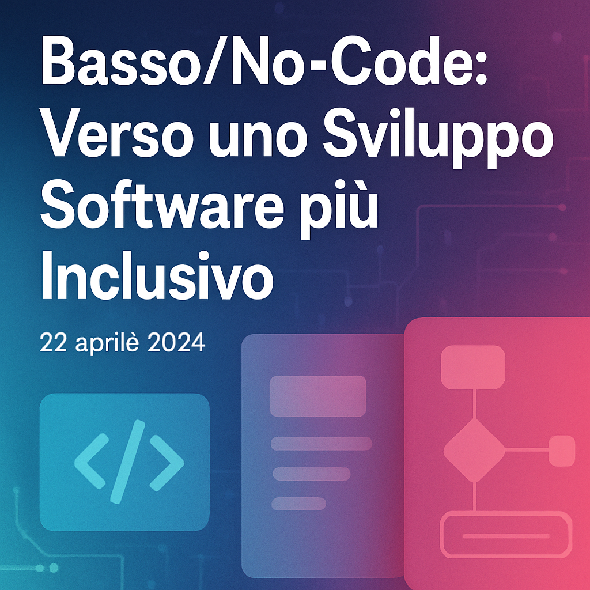
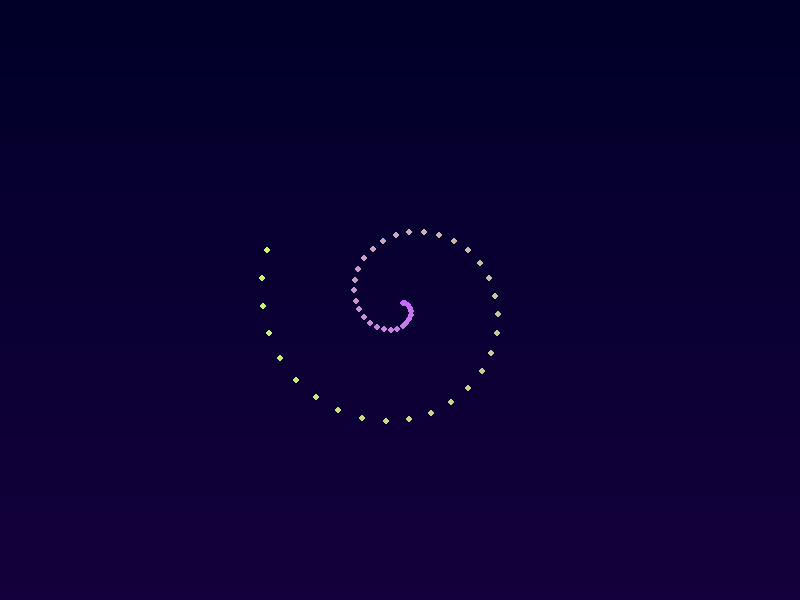

La democratizzazione dell'IA
L'intelligenza artificiale non è più riservata alle grandi aziende: scopri come l'adozione di soluzioni open source e modelli generativi sta cambiando il mondo.
Rilevamento precoce e tecnologia
Dalle analisi AI alle nanotecnologie: la diagnosi precoce diventa realtà e può salvare milioni di vite.
Cleantech: investire nel futuro
Energia pulita, idrogeno verde e investimenti record: la rivoluzione sostenibile in atto.
Cybersecurity: difendersi oggi
Minacce digitali avanzate e soluzioni basate su IA per proteggere dati e aziende.

Calcolo quantistico: il futuro ora
Dalla teoria alle prime applicazioni: come i qubit possono rivoluzionare l'informatica.

L'Internet delle Cose in crescita
Connessioni che esplodono, smart factory e città intelligenti: l'IoT è ovunque.
Ambient computing: la tecnologia invisibile
Dispositivi e algoritmi che lavorano dietro le quinte per semplificare la vita quotidiana.

Automazione robotica dei processi
Software che svolgono compiti ripetitivi e liberano i dipendenti per attività a maggior valore.
Dispositivi indossabili evoluti
Anelli che pagano, calzini intelligenti e abiti con sensori: il wearable si fa sofisticato.

Realtà estesa: oltre il gaming
XR per la formazione, la produzione e l'esercito: scopri nuove applicazioni.

Edge computing e latenza ridotta
Portare il calcolo vicino alla fonte dei dati per ridurre latenza e costi.

Piattaforme low-code e no-code
Democratizzare lo sviluppo software con strumenti visivi per tutti.
ChatGPT: numeri da record
Una panoramica sui dati di utilizzo e sulla crescita vertiginosa del chatbot di OpenAI.
Verso ChatGPT‑5
Rumours, roadmap e possibili novità della prossima generazione del modello.

ChatGPT Agent: l'assistente universale
OpenAI presenta un agente capace di gestire calendari, scrivere documenti e molto altro.